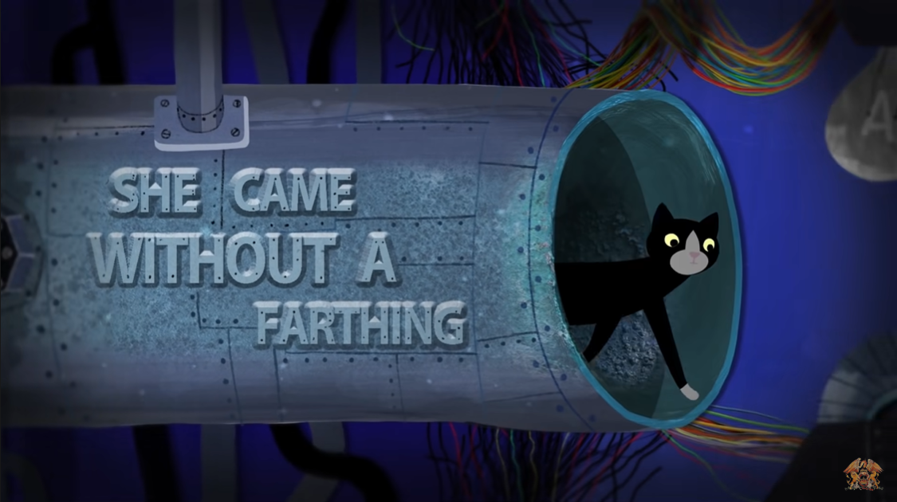
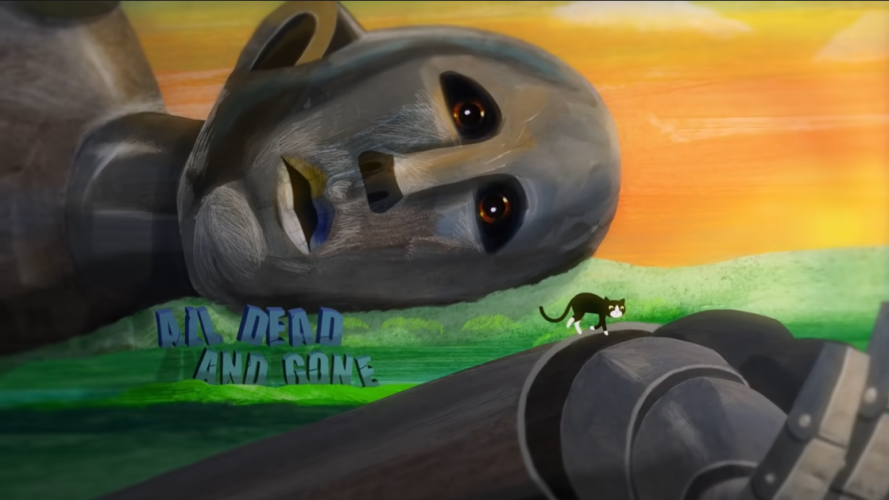
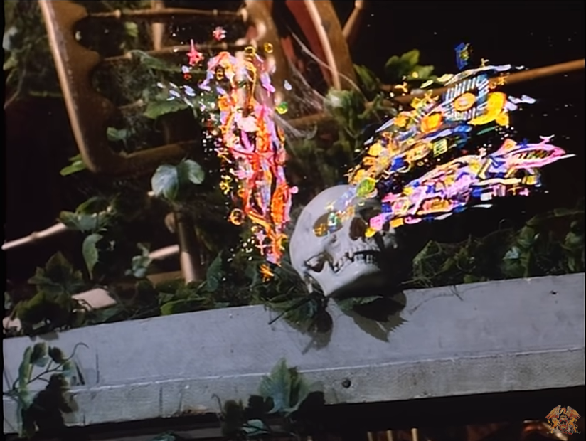
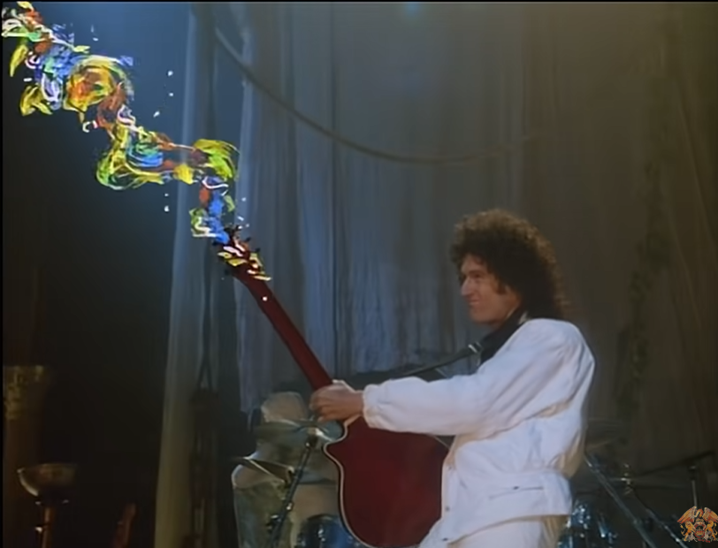
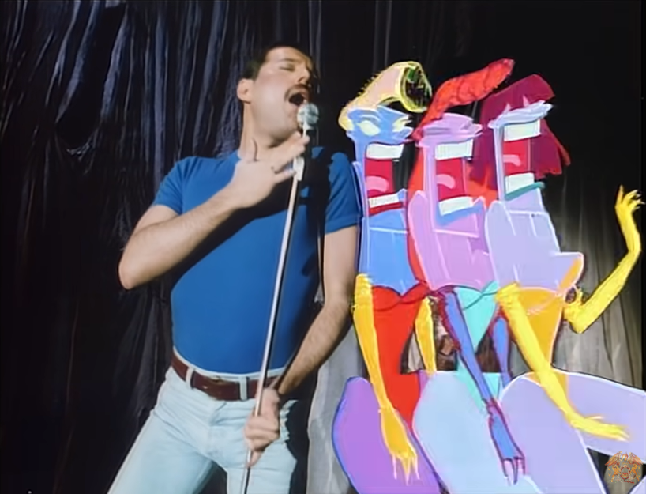

Queen
All Dead,All Dead

She came without a farthing
A babe without a name
So much ado about nothing
Is what she'd try to say
So much ado, my lover
So many games we played
Through every fleeted Summer
Through every precious day
All dead, all dead All the dreams we had And I wonder why I still live
on All dead, all dead And alone, I'm spared My sweeter half instead All
dead and gone All dead
All dead, all dead At the rainbow's end And still, I hear her own sweet song All dead, all dead Take me back again You know my little friend's All dead and gone Her ways are always with me I wander all the while But, please, you must forgive me I am old but still a child All dead, all dead But I should not grieve In time it comes to everyone All dead, all dead But in hope, I breathe Of course, I don't believe You're dead and gone All dead and gone

Queen - A Kind of Magic
It's a kind of magic It's a kind of magic A kind of magic (No way) One dream, one soul One prize, one goal One golden glance of what should be It's a kind of magic One shaft of light that shows the way No mortal man can win this day It's a kind of magic The bell that rings inside your mind Is challenging the doors of time It's a kind of magic The waiting seems eternity
The day will dawn of sanity (Ooh ooh ooh ooh) Is this a kind of magic? It's a kind of magic There can be only one This rage that lasts a thousand years Will soon be done This flame that burns inside of me I'm hearing secret harmonies It's a kind of magic The bell that rings inside your mind Is challenging the doors of time It's a kind of magic It's a kind of magic This rage that lasts a thousand years Will soon be, will soon be, will soon be done This is (this is) a kind (a kind) of magic (yeah) There can be only one (one, one, one) This rage that lasts a thousand years Will soon be done (done) Magic (it's a kind of magic) It's a kind of magic Magic magic magic (magic) (Magic) Aa ha ha haa, it's magic (Magic) It's a kind of magic
